Vice City
Characters
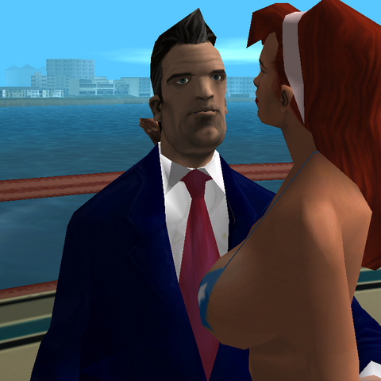
Alex Shrub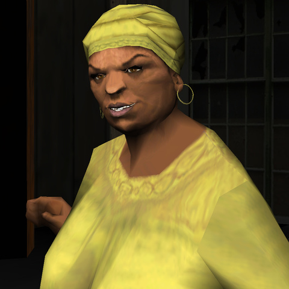
Auntie Poulet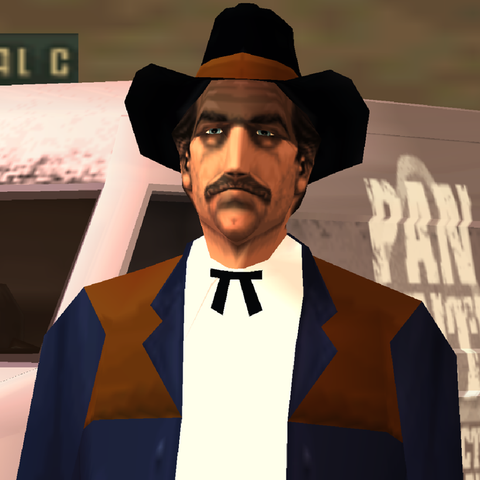
Avery Carrington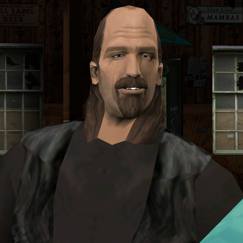
Big Mitch Baker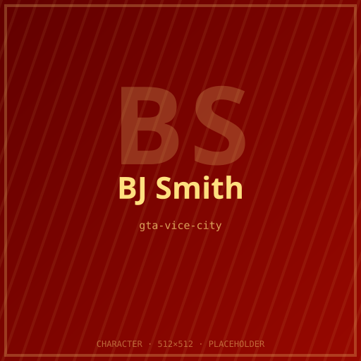
BJ Smith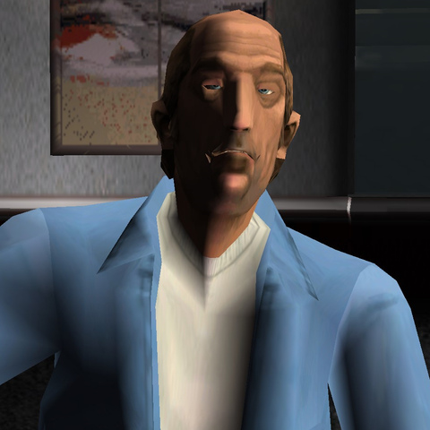
Cam Jones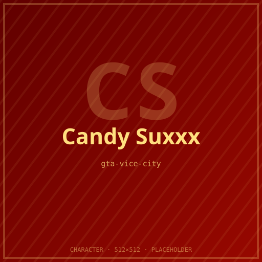
Candy Suxxx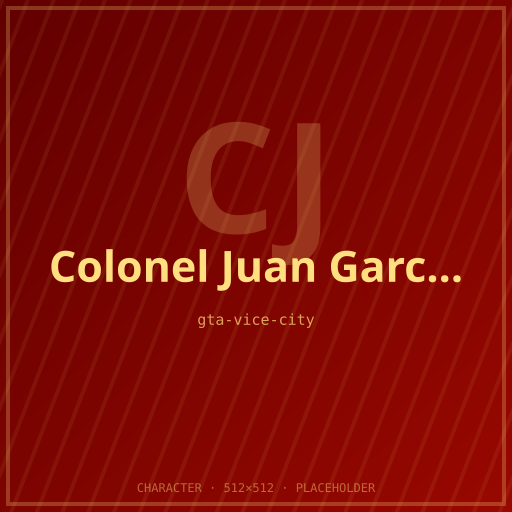
Colonel Juan García Cortés Gonzalez
Gonzalez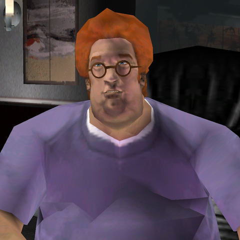
Hilary King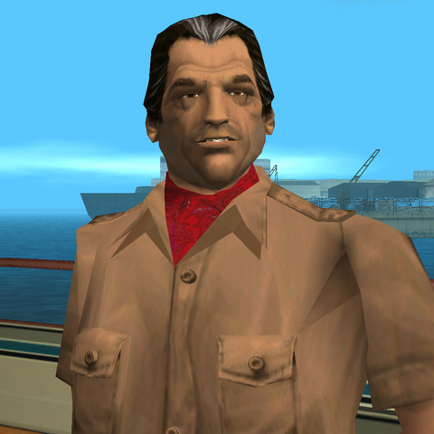
Juan Cortez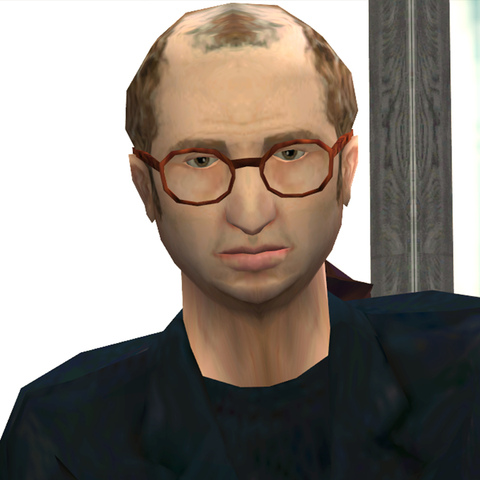
Ken Rosenberg Kent Paul
Kent Paul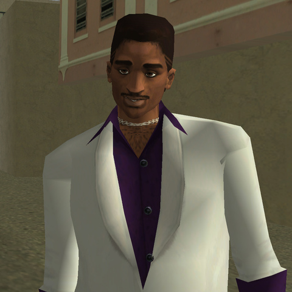
Lance Vance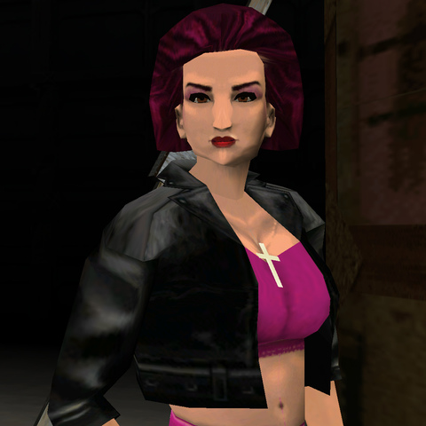
Mercedes Cortez Mitch Baker
Mitch Baker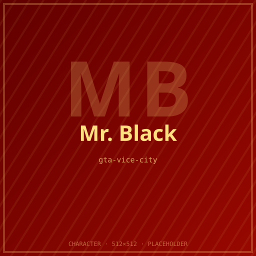
Mr. Black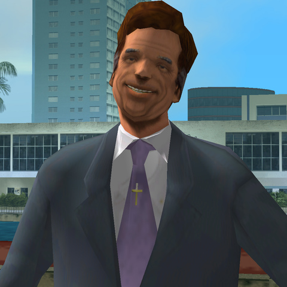
Pastor Richards Phil Cassidy
Phil Cassidy Ricardo Diaz
Ricardo Diaz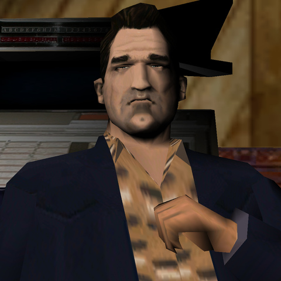
Sonny Forelli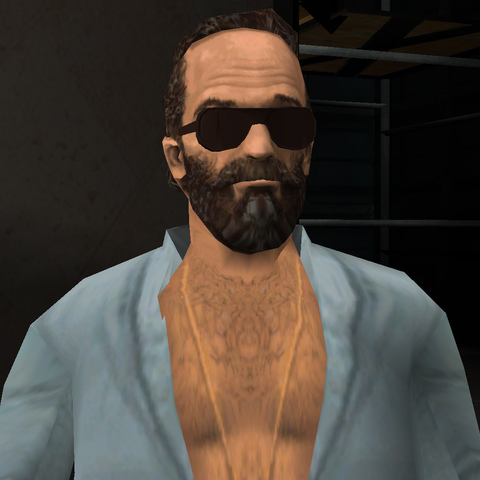
Steve Scott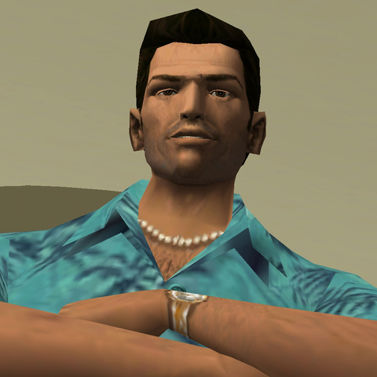
Tommy Vercetti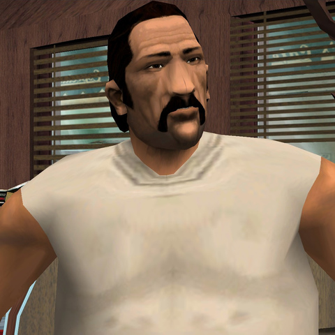
Umberto Robina
| Image | Name | Role | Affiliations | Status |
|---|---|---|---|---|
| Alex Shrub | Politician | Vice City politics | Alive | |
| Auntie Poulet | Haitian gang matriarch | Haitian Gang | Alive | |
| Avery Carrington | Mission giver | — | — | |
| Big Mitch Baker | Biker gang leader | Vice City bikers | Alive | |
| BJ Smith | Car dealer | Sunshine Autos | Alive | |
| Cam Jones | Safecracker | Malibu Club crew | Alive | |
| Candy Suxxx | Adult film actress | InterGlobal Films | Alive | |
| Colonel Juan García Cortés | Arms dealer | Cortés network | Alive | |
| Gonzalez | Diaz associate | Diaz Cartel | Alive |
| Hilary King | Getaway driver | Malibu Club crew | Deceased | |
| Juan Cortez | Mission giver | — | — | |
| Ken Rosenberg | Lawyer, fixer | Vercetti Gang, Forelli Crime Family | Alive | |
| Kent Paul | Music scene fixer | Vice City music industry | Alive |
| Lance Vance | Ally, later betrayer | Vance Crime Family, Vercetti Gang | Deceased | |
| Mercedes Cortez | Socialite | Cortés network | Alive | |
| Mitch Baker | Mission giver | — | — |
| Mr. Black | Mission giver | — | — | |
| Pastor Richards | Televangelist | Richards ministry | Alive | |
| Phil Cassidy | Gun runner | Cortés network | Alive |
| Ricardo Diaz | Antagonist, drug baron | Diaz Cartel | Deceased |
| Sonny Forelli | Antagonist, Forelli boss | Forelli Crime Family | Deceased | |
| Steve Scott | Film director | InterGlobal Films | Alive | |
| Tommy Vercetti | Protagonist | Forelli Crime Family (former), Vercetti Gang | Alive | |
| Umberto Robina | Cuban gang leader | Los Cabrones | Alive |